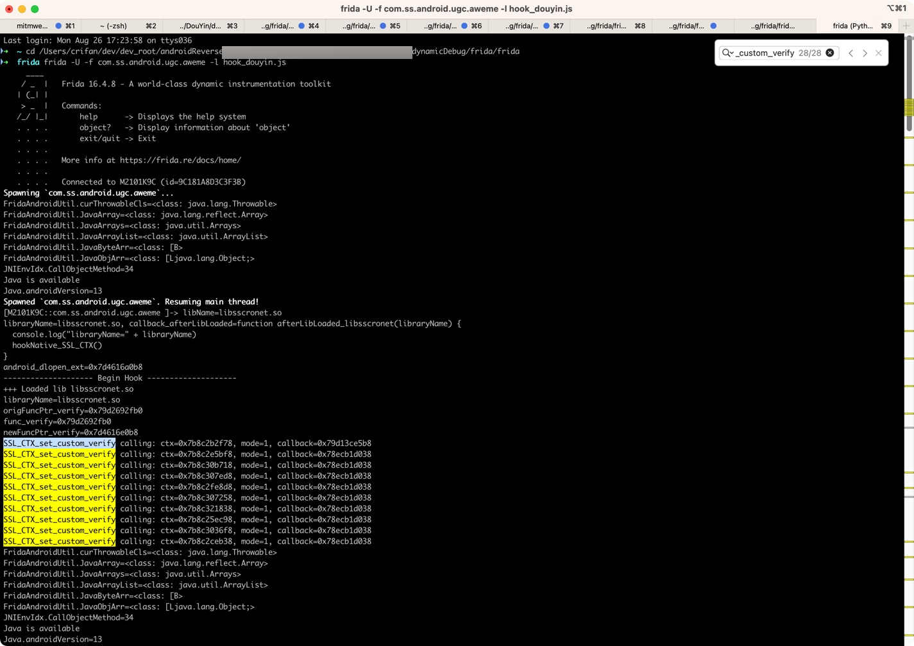

Frida去hook代码的方式
Frida的hook代码=函数：
hookNative_SSL_CTX_set_custom_verify
function hookNative_SSL_CTX_set_custom_verify(){
var origFuncPtr_verify = Module.findExportByName("libsscronet.so", "SSL_CTX_set_custom_verify");
console.log("origFuncPtr_verify=" + origFuncPtr_verify)
// https://commondatastorage.googleapis.com/chromium-boringssl-docs/ssl.h.html#SSL_VERIFY_NONE
// OPENSSL_EXPORT void SSL_CTX_set_custom_verify(SSL_CTX *ctx, int mode, enum ssl_verify_result_t (*callback)(SSL *ssl, uint8_t *out_alert));
var func_verify = new NativeFunction(origFuncPtr_verify, 'pointer', ['pointer', 'int', 'pointer']);
console.log("func_verify=" + func_verify)
var newFuncPtr_verify = new NativeCallback(
function (ctx, mode, callback) {
console.log("SSL_CTX_set_custom_verify calling: ctx=" + ctx + ", mode=" + mode + ", callback=" + callback)
// #define SSL_VERIFY_NONE 0x00
// #define SSL_VERIFY_PEER 0x01
// #define SSL_VERIFY_FAIL_IF_NO_PEER_CERT 0x02
// #define SSL_VERIFY_PEER_IF_NO_OBC 0x04
const SSL_VERIFY_NONE = 0
return func_verify(ctx, SSL_VERIFY_NONE, callback)
// return func_verify(ctx, mode, callback)
},
'pointer',
['pointer', 'int', 'pointer']
)
console.log("newFuncPtr_verify=" + newFuncPtr_verify)
Interceptor.replace(origFuncPtr_verify, newFuncPtr_verify)
}
function afterLibLoaded_libsscronet(libraryName) {
console.log("libraryName=" + libraryName)
hookNative_SSL_CTX_set_custom_verify()
}
function hookNative_libsscronet(){
// let libsscronet_so_name = "libsscronet.so"
// console.log("libsscronet_so_name=" + libsscronet_so_name)
// FridaAndroidUtil.waitForLibLoading(libsscronet_so_name, afterLibLoaded_libsscronet)
FridaAndroidUtil.hookAfterLibLoaded("libsscronet.so", afterLibLoaded_libsscronet)
}
function hookDouyin_Native(){
hookNative_libsscronet()
}
function hookAndroid() {
if(!Java.available){
console.error("Java is not available")
return
}
console.log("Java is available")
console.log("Java.androidVersion=" + Java.androidVersion)
Java.perform(function () {
hookDouyin_Native()
console.log("-------------------- Begin Hook --------------------")
})
}
setImmediate(hookAndroid)
相关代码：
class FridaUtil {
// Frida pointer to C string
static ptrToCStr(curPtr){
var curCStr = curPtr.readCString()
// console.log("curCStr=" + curCStr)
return curCStr
}
}
class FridaAndroidUtil {
...
static waitForLibLoading(libraryName, callback_afterLibLoaded){
console.log("libraryName=" + libraryName + ", callback_afterLibLoaded=" + callback_afterLibLoaded)
var android_dlopen_ext = Module.getExportByName(null, 'android_dlopen_ext')
console.log("android_dlopen_ext=" + android_dlopen_ext)
if (null == android_dlopen_ext) {
return
}
Interceptor.attach(android_dlopen_ext, {
onEnter: function (args) {
// android_dlopen_ext(const char *_Nullable __filename, int __flags, const android_dlextinfo *_Nullable __info)
// console.log("args=" + args)
var filenamePtr = args[0]
var libFullPath = FridaUtil.ptrToCStr(filenamePtr)
// console.log("libFullPath=" + libFullPath)
// var flags = args[1]
// var info = args[2]
// console.log("android_dlopen_ext: [+] libFullPath=" + libFullPath + ", flags=" + flags + ", info=" + info)
// if(libraryName === libFullPath){
if(libFullPath.includes(libraryName)){
console.log("+++ Loaded lib " + libraryName)
this.isLibLoaded = true
}
},
onLeave: function () {
if (this.isLibLoaded) {
callback_afterLibLoaded(libraryName)
this.isLibLoaded = false
}
}
})
}
static hookAfterLibLoaded(libName, callback_afterLibLoaded){
console.log("libName=" + libName)
FridaAndroidUtil.waitForLibLoading(libName, callback_afterLibLoaded)
}
}
最新（FridaAndroidUtil等）工具类函数代码，详见：
https://github.com/crifan/JsFridaUtil/blob/main/frida/FridaAndroidUtil.js
hook输出效果：
-------------------- Begin Hook --------------------
+++ Loaded lib libsscronet.so
libraryName=libsscronet.so
origFuncPtr_verify=0x79d2692fb0
func_verify=0x79d2692fb0
newFuncPtr_verify=0x7d4616e0b8
SSL_CTX_set_custom_verify calling: ctx=0x7b8c2b2f78, mode=1, callback=0x79d13ce5b8
SSL_CTX_set_custom_verify calling: ctx=0x7b8c2e5bf8, mode=1, callback=0x78ecb1d038
SSL_CTX_set_custom_verify calling: ctx=0x7b8c30b718, mode=1, callback=0x78ecb1d038
SSL_CTX_set_custom_verify calling: ctx=0x7b8c307ed8, mode=1, callback=0x78ecb1d038
SSL_CTX_set_custom_verify calling: ctx=0x7b8c2fe8d8, mode=1, callback=0x78ecb1d038
SSL_CTX_set_custom_verify calling: ctx=0x7b8c307258, mode=1, callback=0x78ecb1d038
SSL_CTX_set_custom_verify calling: ctx=0x7b8c321838, mode=1, callback=0x78ecb1d038
SSL_CTX_set_custom_verify calling: ctx=0x7b8c25ec98, mode=1, callback=0x78ecb1d038
SSL_CTX_set_custom_verify calling: ctx=0x7b8c3036f8, mode=1, callback=0x78ecb1d038
SSL_CTX_set_custom_verify calling: ctx=0x7b8c2ceb38, mode=1, callback=0x78ecb1d038

效果：
抖音可以正常访问网络了：